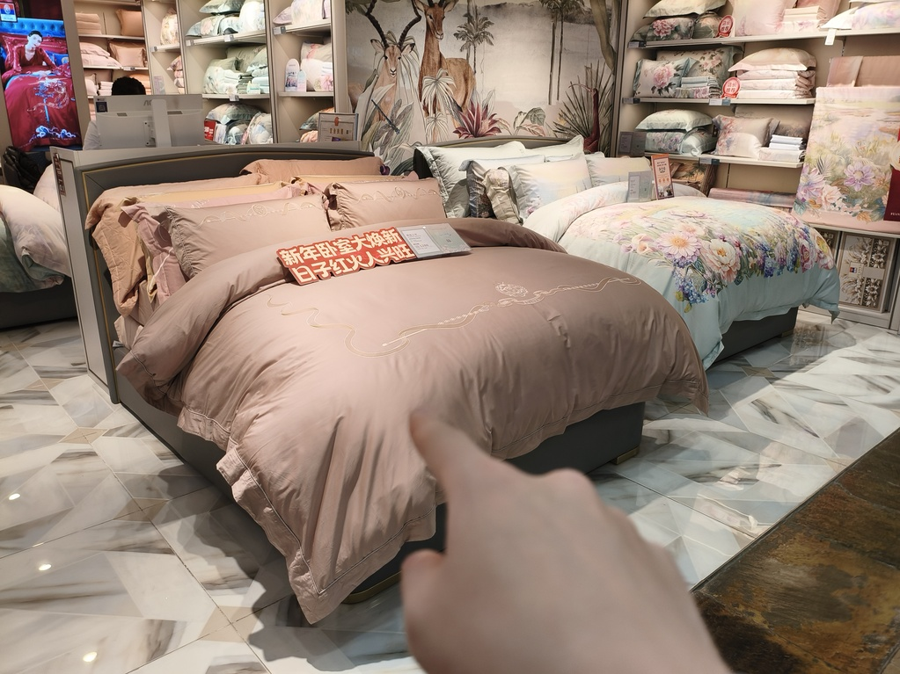
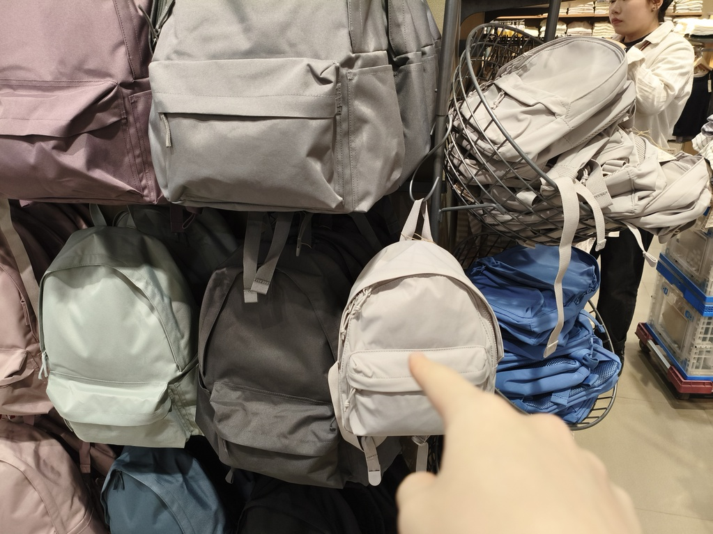
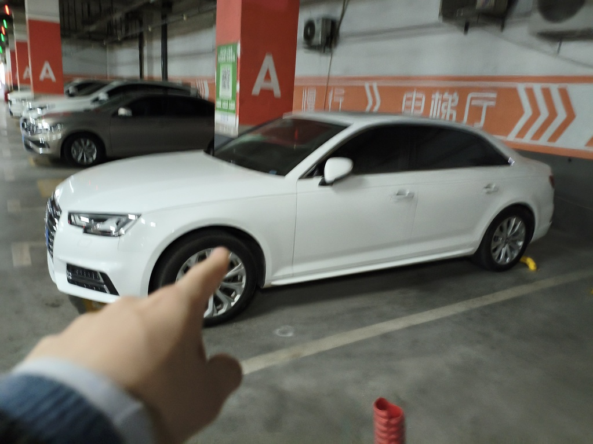
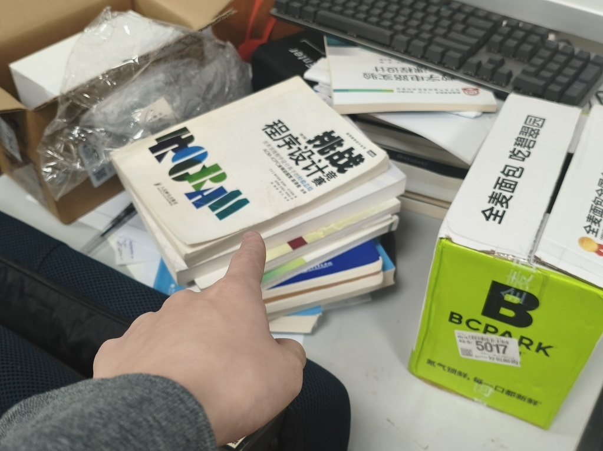
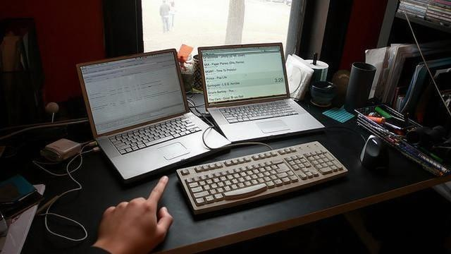
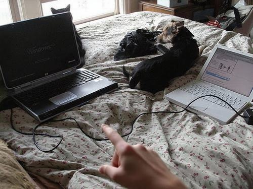

First Large-Scale Deictic Dataset
15,338 egocentric images with hand-target bounding box pairs — the first dataset to combine language, gesture, and egocentric perspective at scale for visual grounding.
Tsinghua University · Dalian University of Technology · Northwestern Polytechnical University · Apple
Traditional Visual Grounding (VG) predominantly relies on textual descriptions to localize objects, a paradigm that inherently struggles with linguistic ambiguity and often ignores non-verbal deictic cues prevalent in real-world interactions. To bridge this gap, we introduce EgoPoint-Ground, the first large-scale multimodal dataset dedicated to egocentric deictic visual grounding. Comprising over 15,000 interactive samples in complex everyday scenes, the dataset provides rich, multi-grained annotations including hand-target bounding box pairs, dense semantic captions, and visual question-answer pairs. We establish a comprehensive benchmark and propose SV-CoT, a novel baseline framework that synergizes gestural and linguistic cues through a Visual Chain-of-Thought paradigm.
The first large-scale multimodal dataset for first-person hand-pointing referring, with 15,338 egocentric images across 20+ everyday scenarios. Each sample includes hand bounding boxes, target object annotations, dense captions, and VQA pairs.






Samples from the EgoPoint-Ground dataset — egocentric images with hand-pointing annotations across diverse everyday scenarios.
What makes EgoPoint-Ground a uniquely valuable resource for embodied AI research.
15,338 egocentric images with hand-target bounding box pairs — the first dataset to combine language, gesture, and egocentric perspective at scale for visual grounding.
Beyond bounding boxes: dense semantic captions, deictic visual QA pairs, hand pose annotations, and candidate object sets for each scene.
Two tasks — Egocentric Deictic Grounding (EDG) and Deictic VQA (D-VQA) — with systematic evaluation across Hybrid and Real-World data splits.
A Visual Chain-of-Thought model that synergizes gestural and linguistic cues through explicit geometric reasoning, achieving +11.7% absolute improvement over prior methods.
Spanning 20+ everyday scenarios (kitchen, office, workshop, living room, etc.) with natural occlusions, lighting variations, and multi-object clutter.
Dataset, benchmark code, evaluation scripts, and model checkpoints publicly released to accelerate research in multimodal referring and embodied AI.
Download the dataset, and access paper and code resources.